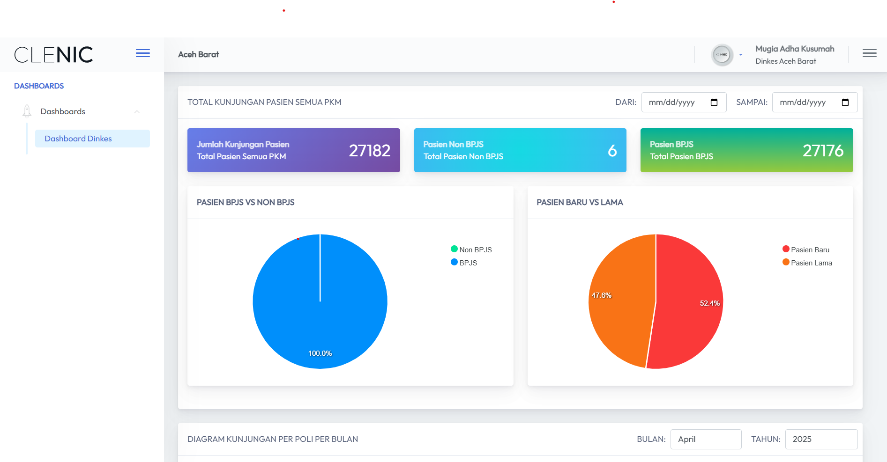
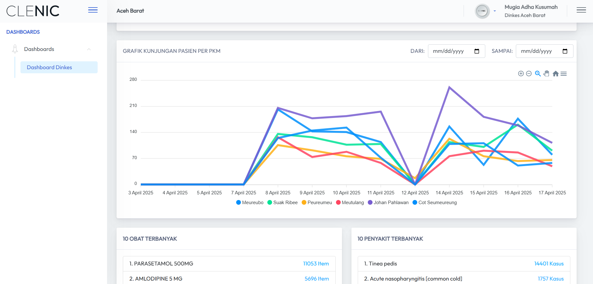
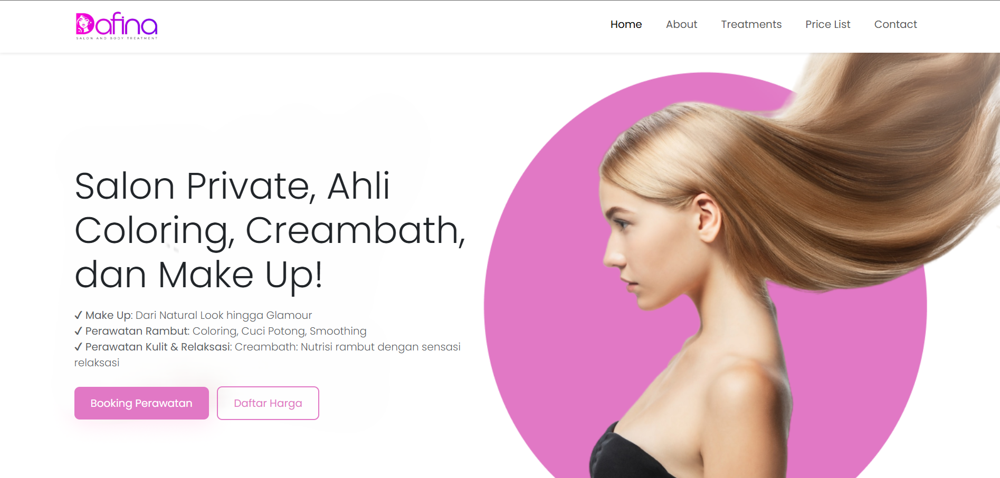
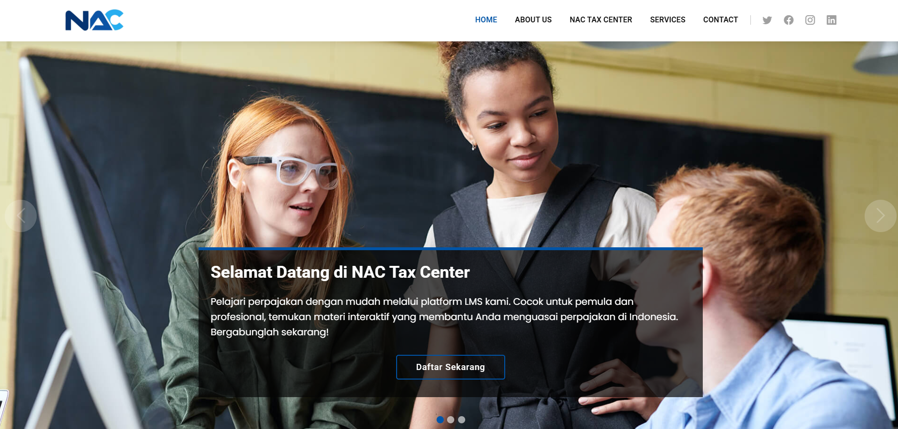

Mugia Adha Kusumah
Fullstack Web Developer | Build Things That Work
Fullstack Web Developer | Build Things That Work
Saya adalah seorang fullstack developer dengan pengalaman 8 tahun mengembangkan aplikasi berbasis web untuk kebutuhan klinik, dashboard monitoring. Passion saya adalah membuat sistem yang cepat, efisien, dan user-friendly.
Aplikasi monitoring capaian indikator kesehatan tiap puskesmas. Menampilkan chart interaktif dan data setiap cabang puskesmas di aceh barat.
 Tantangan yang saya hadapi adalah mengkoordinasi beberapa cabang yang memiliki database masing-masing. Setiap cabang memiliki flag untuk data yang spesifik. Saya harus membuat query dinamis yang mengakomodir semua cabang dan bisa digunakan untuk menampilkan data secara fleksibel sesuai flag yang ada.
username : acehbarat
password : 12345
kdcabang : 2025
Teknologi yang digunakan untuk proyek ini:
Website ini merupakan company profile Dafina Salon, yang berfokus pada layanan salon muslimah dengan suasana rumah sendiri yang private, namun tetap menerima pelanggan non-muslim. Aplikasi ini memberikan informasi terkait layanan salon, testimoni pelanggan, dan fitur pemesanan online (direct DM ke Whatsapp).
Teknologi yang digunakan untuk proyek ini:
Website ini merupakan company profile Nac Tax Center, yang berfokus pada layanan perpajakan dengan pendekatan profesional dan ramah. Website ini memberikan informasi mengenai layanan pajak yang ditawarkan, testimoni dari klien, serta fitur pemesanan konsultasi secara langsung melalui WhatsApp.
Teknologi yang digunakan untuk proyek ini:
Email: mugiaadha@gmail.com
GitHub: @mugiaadha
LinkedIn: https://www.linkedin.com/in/mugia-adha-kusumah-75537112b/